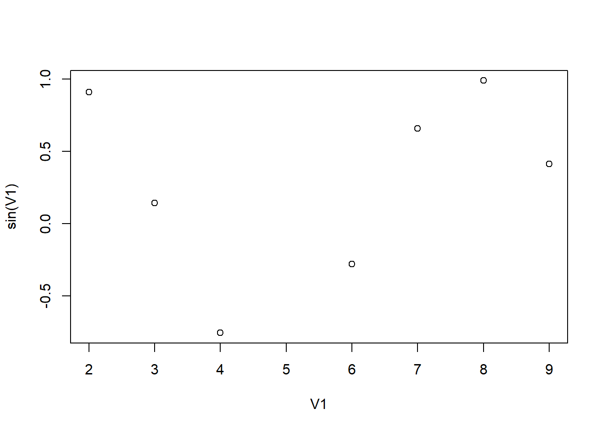
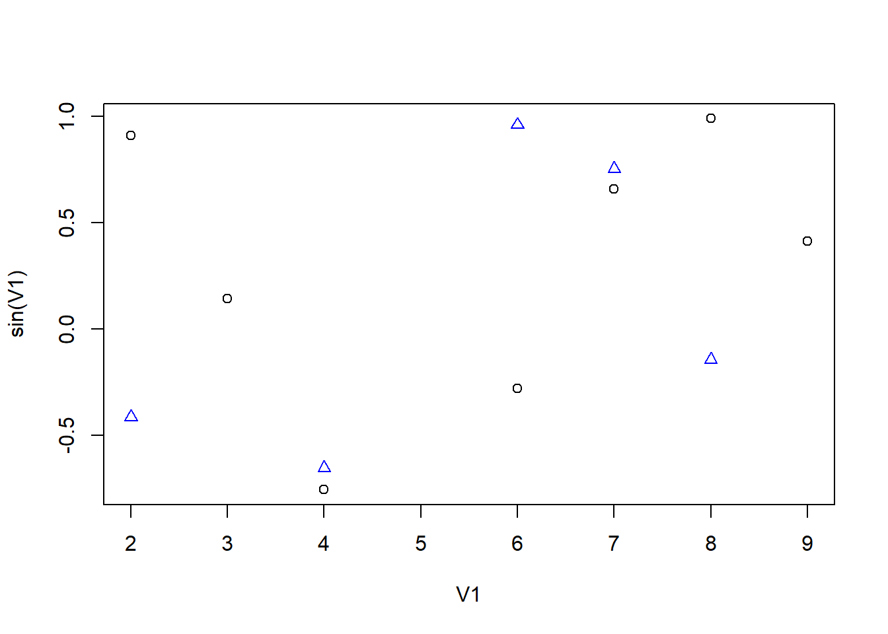
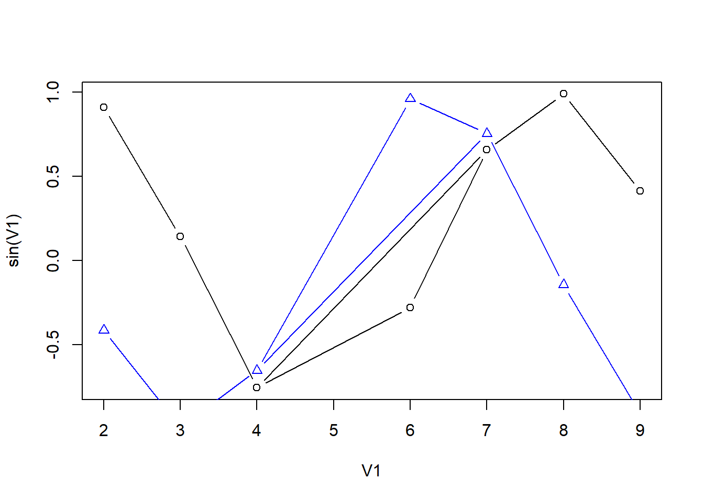
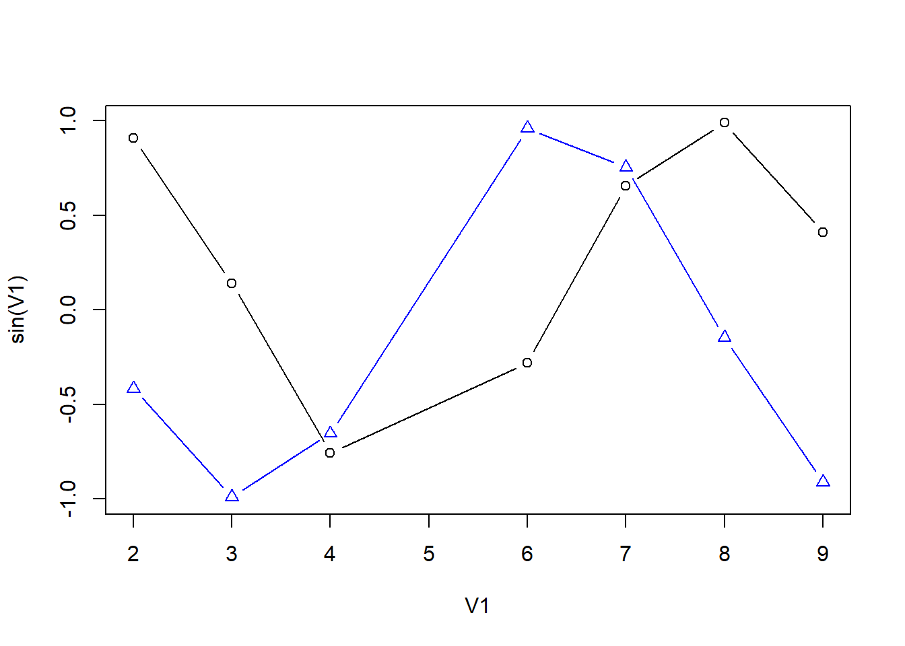

Chapter 1 Introduction
This chapter is provided by Dr. H.G.J van Mil.
The aim of today is to start working with Teams, R and Rstudio. I assume most of you have both installed. If not, follow the guide on the next page. You can also follow it to get the most up-to-date version.
In its simplest form, the R language is similar to a calculator, but it can do much more, especially with respect to statistics. In this short tutorial, I will demonstrate some aspects of the R language, starting with simple computation and then moving to work with vectors and simple plots. Some examples may seem trivially simple, but it is important to get a feel for how R syntax works. Try to experiment by changing the code and predict what will happen or try and find the cause for any errors.
But before we start, I want to go to your group, decide who will share the desktop with Rstudio. It is important to learn how to work together and find a way to share your data within a group.
1.1 Meeting in Teams
Go to your group channel in Teams and exchange information.
You can find the list on Brightspace with all the channel names and members, and join your group in the corresponding channel in Teams. If you do not have access to Brightspace or Teams, Frans or I can add you (provided you are following the GRS course at the IBL).
- Find out how to share your desktop;
- Find out how to use the chat function;
- Find out how to store documents in a way that is accessible for all team members.
Possible ways to cooperate on the assignments in teams:
- One student shares their desktop with RStudio;
- All channel members work together on the assignments;
- Exchange codes using the chat function. Write proposed code in the chat and the student that shares their desktop can easily copy-paste it into their Rmd file;
- In the end, the Rmd and HTML files are shared with all the channel members.
In the warm-up assignment below, you could propose alternative or similar codes if necessary.
1.2 Simple Calculations
The use of addition, subtraction, multiplication and division is straight forward and equivalent to an old-school calculator. Create a new R markdown file, copy the code below to your clipboard (there is a useful button for this in the upper right corner) and paste it into a new chunk in RStudio.
Once you’ve pasted the code above into a chunk in an R markdown file, you can put your cursor somewhere in the line that contains the calculation (inside the gray chunk) and press Ctrl + Enter to perform the calculation. Alternatively, you can run all code within a chunk by pressing the green play button in the upper right corner of the chunk.
You can also perform more complex calculations by combining different calculations and using brackets to influence the order of evaluation:
Like the old-school calculator, R makes extensive use of functions. As we shall see later on in the course, R has a very large number of functions, most of them specialized for statistical computation.
A function consists of two elements:
- The function itself, with its default arguments;
- The arguments of the function to be specified.
This always take on the following form: function(argument1 = ..., argument2 = ..., etc.), where the arguments form the input of the function. Functions can have one or more arguments, and these arguments may be of different types (numbers, strings of numbers, specific values, matrices, etc.). Some simple example are shown below:
1.2.1 Logarithms
1.2.2 Exponentials and power functions
Note below that we can use a function as an argument within another function (a function can be nested in another function):
1.2.3 Trigonometric functions
To see which trigonometric function are available, go to the lower right window in Rstudio and click on the help tab. In the search field on the top right of that window type Trig. Some examples below:
1.2.4 Functions of a random variable
We can generate a random variable in R like this:
Note that every time you call the function you get a different random number.
Making a random variable would therefore give a different value for everyone:
This x is a variable that stores the result of runif(1), a random number.
A function of a random variable is itself also a random variable. Can you predict the outcome of the function below?
1.2.5 Logical operators
You might not have used these on an old-school calculator, but on the more advanced calculators like the graphical calculator, these functions are available. Try to figure out what each of the operators below do and write them down behind the #. If it’s not clear from the example code here, change the values to see whats happens.
"A" == "B" #
"A" != "B" #
"C" == "C" #
"C" != "C" #
2 == 2 #
2 != 2 #
3 < 6 #
3 < 3 #
3 <= 3 #
3 >= 3 #For the other logical operators & (and) and | (or) we need more than one number or symbol. We can make a vector (a sequence of values) of numbers or symbols. Think of this vector as a row in an Excel sheet. This concept of a vector is very important in R when dealing with data. Below we will store these vectors in a variable that can be reused in our calculations.
1.3 Vectors
1.3.1 Creating a vector
When you store objects in R with the assign operator (<-), you can then later use those objects. You must run these lines before the exercises after this will work.
## [1] 3 2 3 4 6 7 4 6 7 8 9## [1] "c" "b" "c" "d" "f" "g" "d" "f" "g" "h" "i"In R you can use numeric vectors in calculations:
## [1] 59## [1] 1.0986123 0.6931472 1.0986123 1.3862944 1.7917595 1.9459101 1.3862944
## [8] 1.7917595 1.9459101 2.0794415 2.1972246## [1] -0.2794155 -0.7568025 -0.2794155 0.9893582 -0.5365729 0.9906074
## [7] 0.9893582 -0.5365729 0.9906074 -0.2879033 -0.7509872Do you think that sin(V2) would work? Why?
1.3.2 Logical operators
Write in the comments (after #) what happens in the following lines:
## [1] FALSE FALSE FALSE FALSE TRUE TRUE FALSE TRUE TRUE TRUE FALSE## [1] TRUE TRUE TRUE TRUE TRUE TRUE TRUE TRUE TRUE TRUE TRUE## [1] TRUE TRUE TRUE TRUE FALSE FALSE TRUE FALSE FALSE FALSE FALSE## [1] TRUE FALSE TRUE FALSE FALSE FALSE FALSE FALSE FALSE FALSE FALSE## [1] FALSE FALSE FALSE FALSE FALSE FALSE FALSE FALSE FALSE FALSE FALSE## [1] FALSE TRUE FALSE TRUE TRUE TRUE TRUE TRUE TRUE TRUE TRUE## [1] FALSE TRUE FALSE TRUE TRUE TRUE TRUE TRUE TRUE TRUE TRUEYou can use these logical operator to select specific parts of your data set (subsetting). Here we use square brackets to indicate a location in the vector:
## [1] "b" "d" "f" "g" "d" "f" "g" "h" "i"## [1] 2 4 6 7 4 6 7 8 9## [1] 3 2 3 4 4## [1] "c" "b" "c" "d" "d"For hints see this page.
1.3.3 Simple plots in R
Here we use our vector from the previous exercise to create a plot.

You can make this a more complex plot by adding the cosine for the values of V1:


V1 <- sort(V1)
plot(V1, sin(V1), type = "b", ylim = c(-1, 1))
points(V1, cos(V1), col = "blue", pch = 2, type = "b")
R has far more advanced visualization functions, emphasizing the importance of data visualization in statistical analysis, that we will explore in a later tutorial.
That concludes all for the first day. If you want to continue practicing in R, have a look at the paragraph “Tutorials” on the next page.
Tomorrow we start working with more advanced data manipulation methods and higher plot functions.